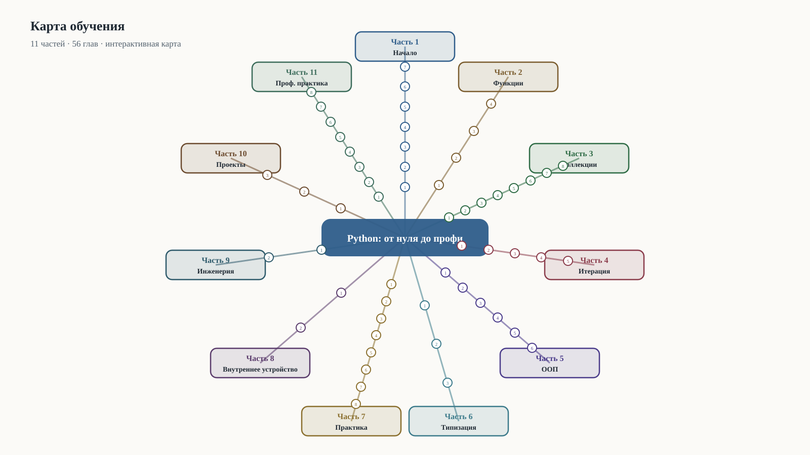

Python: от нуля до профессиональной разработки
Практический курс с проверяемыми примерами. Учебник Python для читателя без опыта программирования, доводящий до уровня профессиональной разработки: от вычислений и типов до асинхронности, тестирования, безопасности, внутреннего устройства и прикладных проектов.
- 56 глав
- 11 частей
- 109 иллюстраций
- 625 исполняемых примеров
Карта обучения
Части, главы и связи между понятиями — на одной интерактивной карте.

Интерактивная карта {len(book.chapters)} глав: зум, панорама, фильтр по частям.
Содержание книги
Начало
Язык, среда и первые программы
Функции и структура программы
Как разбивать задачу на части
Коллекции и данные
Как хранить и обрабатывать множество значений
Итерация и функции высшего порядка
Как выражать повторяющиеся вычисления
Объектно-ориентированное программирование
Как моделировать предметную область
Типизация, тестирование и инструменты
Как делать код надёжным и поддерживаемым
Практическая разработка
Стандартная библиотека, данные, сеть, конкурентность
Внутреннее устройство
Как Python устроен внутри
Инженерия и сопровождение
Как проектировать и сопровождать системы
Проекты
Полные прикладные работы
Профессиональная практика и прикладные темы
То, что отличает работающий код от профессионального
Что внутри
Проверяемые примеры
Каждый исполняемый пример запускается harness в изоляции, вывод сверяется с книгой.
Оригинальные иллюстрации
SVG-схемы проверяются на безопасность, доступность и рендер.
Упражнения с решениями
Практика в каждой главе: от прогнозирования вывода до мини-проектов.
Глоссарий и граф понятий
Единая терминология и порядок введения понятий, проверяемые машинно.
Перед книгой
- История и философия Python
- Словарь программиста
- Предисловие
- Карта обучения
- Благодарности и происхождение материалов